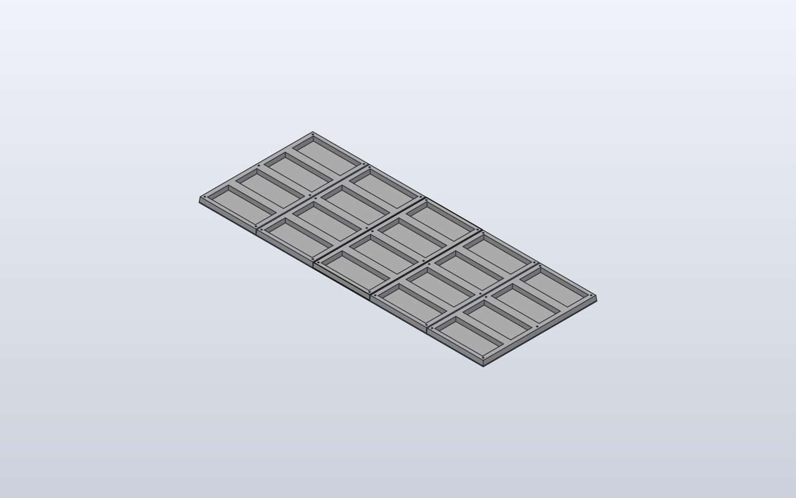

Model preview

Native SolidCraft image, matching this source revision.
Five panels on the source project's 800 × 320 mm nominal grid. One rear-tapered, four-bay panel component is reused at X=−320, −160, 0, 160 and 320 mm. Columns 2 and 4 rotate 180° about the local depth axis for the rear data chain. R5 corners, detailed rear reinforcements, PCB and connectors remain future phases.
Files
Download the source and the generated command plan.
Command JSON describes CAD actions; it is not an already-saved .sc design.
Construction stages
- Create the reusable tapered HUB75 component
- Make six blind M3 rear bores and assign material once
- Ground the middle occurrence at X=0
- Place four copies on the 160 mm nominal grid
- Rotate the alternating copies around Z by 180°
- Verify five saved native occurrences
Python model
"""Basic five-panel array copied from the OpenSCAD v1.2 placement rules.
SCPF coordinates: X horizontal, Y panel vertical, Z front-to-rear.
The OpenSCAD 180-degree Y rotation maps to a 180-degree Z rotation.
From rear left to right: chain numbers 5,4,3,2,1, input top/bottom
alternating TOP, BOTTOM, TOP, BOTTOM, TOP.
"""
from scpf import component
from models.components.hub75 import Hub75Panel as Hub75PanelDefinition
Hub75Panel = component(Hub75PanelDefinition)
class BasicHub75Screen:
nominal_pitch_x = 160.0
nominal_height = 320.0
def build(self):
# The first occurrence stays at world X=0 (middle column).
# occurrence.copy inherits its source transform, so a first
# occurrence at -320 mm would cause double-offset copies.
central = Hub75Panel()
screen = central
for index in (0, 1, 3, 4):
x = (index - 2) * self.nominal_pitch_x
occurrence = central.copy().move(x=x)
if index in (1, 3):
occurrence = occurrence.rotate(axis=(0, 0, 1), degrees=180)
screen = screen + occurrence
return screen
BasicHub75Screen()
Native SolidCraft command sequence
- Named CAD parameterparameters.add · name: Hub75Panel_width
{ "command": "parameters.add", "params": { "name": "Hub75Panel_width", "expression": "159.7", "unit": "mm" } } - Named CAD parameterparameters.add · name: Hub75Panel_height
{ "command": "parameters.add", "params": { "name": "Hub75Panel_height", "expression": "319.71", "unit": "mm" } } - Named CAD parameterparameters.add · name: Hub75Panel_depth
{ "command": "parameters.add", "params": { "name": "Hub75Panel_depth", "expression": "14.5", "unit": "mm" } } - Named CAD parameterparameters.add · name: Hub75Panel_front_depth
{ "command": "parameters.add", "params": { "name": "Hub75Panel_front_depth", "expression": "2", "unit": "mm" } } - Named CAD parameterparameters.add · name: Hub75Panel_rear_inset
{ "command": "parameters.add", "params": { "name": "Hub75Panel_rear_inset", "expression": "1.25", "unit": "mm" } } - Named CAD parameterparameters.add · name: Hub75Panel_rear_side_rail
{ "command": "parameters.add", "params": { "name": "Hub75Panel_rear_side_rail", "expression": "12.5", "unit": "mm" } } - Named CAD parameterparameters.add · name: Hub75Panel_rear_crossbar
{ "command": "parameters.add", "params": { "name": "Hub75Panel_rear_crossbar", "expression": "20", "unit": "mm" } } - Named CAD parameterparameters.add · name: Hub75Panel_rear_end_rail
{ "command": "parameters.add", "params": { "name": "Hub75Panel_rear_end_rail", "expression": "10.75", "unit": "mm" } } - Named CAD parameterparameters.add · name: Hub75Panel_hole_diameter
{ "command": "parameters.add", "params": { "name": "Hub75Panel_hole_diameter", "expression": "3", "unit": "mm" } } - Named CAD parameterparameters.add · name: Hub75Panel_mount_x
{ "command": "parameters.add", "params": { "name": "Hub75Panel_mount_x", "expression": "72", "unit": "mm" } } - Named CAD parameterparameters.add · name: Hub75Panel_mount_y
{ "command": "parameters.add", "params": { "name": "Hub75Panel_mount_y", "expression": "152", "unit": "mm" } } - Create reusable componentcomponent.create · name: Hub75Panel
{ "command": "component.create", "params": { "name": "Hub75Panel", "grounded": true } } - Create sketchsketch.create · name: Hub75Panel footprint, plane: XY
{ "command": "sketch.create", "params": { "plane": "XY", "name": "Hub75Panel footprint" } } - Rectanglesketch.rectangle.two_point
{ "command": "sketch.rectangle.two_point", "params": { "p0": [ "-Hub75Panel_width / 2", "-Hub75Panel_height / 2" ], "p1": [ "Hub75Panel_width / 2", "Hub75Panel_height / 2" ] } } - Finish sketchsketch.finish
{ "command": "sketch.finish", "params": {} } - Extrusion / cutsolid.extrude · body_name: Hub75Panel
{ "command": "solid.extrude", "params": { "distance": "Hub75Panel_front_depth", "body_name": "Hub75Panel" } } - Create sketchsketch.create · name: Hub75Panel rear start, plane: XY
{ "command": "sketch.create", "params": { "plane": "XY", "name": "Hub75Panel rear start", "offset": "Hub75Panel_front_depth" } } - Rectanglesketch.rectangle.two_point
{ "command": "sketch.rectangle.two_point", "params": { "p0": [ "-Hub75Panel_width / 2", "-Hub75Panel_height / 2" ], "p1": [ "Hub75Panel_width / 2", "Hub75Panel_height / 2" ] } } - Finish sketchsketch.finish
{ "command": "sketch.finish", "params": {} } - Create sketchsketch.create · name: Hub75Panel rear perimeter, plane: XY
{ "command": "sketch.create", "params": { "plane": "XY", "name": "Hub75Panel rear perimeter", "offset": "Hub75Panel_depth" } } - Rectanglesketch.rectangle.two_point
{ "command": "sketch.rectangle.two_point", "params": { "p0": [ "(-Hub75Panel_width / 2) + (Hub75Panel_rear_inset)", "(-Hub75Panel_height / 2) + (Hub75Panel_rear_inset)" ], "p1": [ "(Hub75Panel_width / 2) - (Hub75Panel_rear_inset)", "(Hub75Panel_height / 2) - (Hub75Panel_rear_inset)" ] } } - Finish sketchsketch.finish
{ "command": "sketch.finish", "params": {} } - solid.loftsolid.loft · operation: join
{ "command": "solid.loft", "params": { "sections": [ { "sketch": "Hub75Panel rear start" }, { "sketch": "Hub75Panel rear perimeter" } ], "operation": "join", "targets": [ "Hub75Panel" ] } } - Create sketchsketch.create · name: Rear electronics bays, plane: XY
{ "command": "sketch.create", "params": { "plane": "XY", "name": "Rear electronics bays", "offset": "(Hub75Panel_depth)" } } - Rectanglesketch.rectangle.two_point
{ "command": "sketch.rectangle.two_point", "params": { "p0": [ "((-(Hub75Panel_width)) / 2) + (Hub75Panel_width / 2) + ((-(Hub75Panel_width)) / 2) + (Hub75Panel_rear_side_rail * 0.998125)", "((-(Hub75Panel_height)) / 2) + (Hub75Panel_height / 2) + (-(Hub75Panel_height / 2)) + (Hub75Panel_rear_end_rail * 0.999094)" ], "p1": [ "((-(Hub75Panel_width)) / 2) + (Hub75Panel_width / 2) + ((-(Hub75Panel_width)) / 2) + (Hub75Panel_rear_side_rail * 0.998125) + (Hub75Panel_width - ((Hub75Panel_rear_side_rail * 0.998125) * 2))", "((-(Hub75Panel_height)) / 2) + (Hub75Panel_height / 2) + (-(Hub75Panel_height / 2)) + (Hub75Panel_rear_end_rail * 0.999094) + ((-(Hub75Panel_height / 4)) - ((Hub75Panel_rear_crossbar * 0.999094) / 2)) - ((-(Hub75Panel_height / 2)) + (Hub75Panel_rear_end_rail * 0.999094))" ] } } - Rectanglesketch.rectangle.two_point
{ "command": "sketch.rectangle.two_point", "params": { "p0": [ "((-(Hub75Panel_width)) / 2) + (Hub75Panel_width / 2) + ((-(Hub75Panel_width)) / 2) + (Hub75Panel_rear_side_rail * 0.998125)", "((-(Hub75Panel_height)) / 2) + (Hub75Panel_height / 2) + (-(Hub75Panel_height / 4)) + ((Hub75Panel_rear_crossbar * 0.999094) / 2)" ], "p1": [ "((-(Hub75Panel_width)) / 2) + (Hub75Panel_width / 2) + ((-(Hub75Panel_width)) / 2) + (Hub75Panel_rear_side_rail * 0.998125) + (Hub75Panel_width - ((Hub75Panel_rear_side_rail * 0.998125) * 2))", "((-(Hub75Panel_height)) / 2) + (Hub75Panel_height / 2) + (-(Hub75Panel_height / 4)) + ((Hub75Panel_rear_crossbar * 0.999094) / 2) + (-((Hub75Panel_rear_crossbar * 0.999094) / 2)) - ((-(Hub75Panel_height / 4)) + ((Hub75Panel_rear_crossbar * 0.999094) / 2))" ] } } - Rectanglesketch.rectangle.two_point
{ "command": "sketch.rectangle.two_point", "params": { "p0": [ "((-(Hub75Panel_width)) / 2) + (Hub75Panel_width / 2) + ((-(Hub75Panel_width)) / 2) + (Hub75Panel_rear_side_rail * 0.998125)", "((-(Hub75Panel_height)) / 2) + (Hub75Panel_height / 2) + ((Hub75Panel_rear_crossbar * 0.999094) / 2)" ], "p1": [ "((-(Hub75Panel_width)) / 2) + (Hub75Panel_width / 2) + ((-(Hub75Panel_width)) / 2) + (Hub75Panel_rear_side_rail * 0.998125) + (Hub75Panel_width - ((Hub75Panel_rear_side_rail * 0.998125) * 2))", "((-(Hub75Panel_height)) / 2) + (Hub75Panel_height / 2) + ((Hub75Panel_rear_crossbar * 0.999094) / 2) + ((Hub75Panel_height / 4) - ((Hub75Panel_rear_crossbar * 0.999094) / 2)) - ((Hub75Panel_rear_crossbar * 0.999094) / 2)" ] } } - Rectanglesketch.rectangle.two_point
{ "command": "sketch.rectangle.two_point", "params": { "p0": [ "((-(Hub75Panel_width)) / 2) + (Hub75Panel_width / 2) + ((-(Hub75Panel_width)) / 2) + (Hub75Panel_rear_side_rail * 0.998125)", "((-(Hub75Panel_height)) / 2) + (Hub75Panel_height / 2) + (Hub75Panel_height / 4) + ((Hub75Panel_rear_crossbar * 0.999094) / 2)" ], "p1": [ "((-(Hub75Panel_width)) / 2) + (Hub75Panel_width / 2) + ((-(Hub75Panel_width)) / 2) + (Hub75Panel_rear_side_rail * 0.998125) + (Hub75Panel_width - ((Hub75Panel_rear_side_rail * 0.998125) * 2))", "((-(Hub75Panel_height)) / 2) + (Hub75Panel_height / 2) + (Hub75Panel_height / 4) + ((Hub75Panel_rear_crossbar * 0.999094) / 2) + ((Hub75Panel_height / 2) - (Hub75Panel_rear_end_rail * 0.999094)) - ((Hub75Panel_height / 4) + ((Hub75Panel_rear_crossbar * 0.999094) / 2))" ] } } - Finish sketchsketch.finish
{ "command": "sketch.finish", "params": {} } - Extrusion / cutsolid.extrude · name: Rear electronics bays, direction: negative, operation: cut
{ "command": "solid.extrude", "params": { "operation": "cut", "targets": [ "Hub75Panel" ], "name": "Rear electronics bays", "distance": "Hub75Panel_depth - (Hub75Panel_front_depth)", "direction": "negative" } } - Native Hole featuresolid.hole · direction: [0.0, 0.0, -1.0]
{ "command": "solid.hole", "params": { "position": [ "-(Hub75Panel_mount_x)", "-(Hub75Panel_mount_y)", "Hub75Panel_depth" ], "diameter": "Hub75Panel_hole_diameter", "targets": [ "Hub75Panel" ], "depth": "Hub75Panel_depth - (Hub75Panel_front_depth)", "direction": [ 0.0, 0.0, -1.0 ] } } - Native Hole featuresolid.hole · direction: [0.0, 0.0, -1.0]
{ "command": "solid.hole", "params": { "position": [ "-(Hub75Panel_mount_x)", 0, "Hub75Panel_depth" ], "diameter": "Hub75Panel_hole_diameter", "targets": [ "Hub75Panel" ], "depth": "Hub75Panel_depth - (Hub75Panel_front_depth)", "direction": [ 0.0, 0.0, -1.0 ] } } - Native Hole featuresolid.hole · direction: [0.0, 0.0, -1.0]
{ "command": "solid.hole", "params": { "position": [ "-(Hub75Panel_mount_x)", "Hub75Panel_mount_y", "Hub75Panel_depth" ], "diameter": "Hub75Panel_hole_diameter", "targets": [ "Hub75Panel" ], "depth": "Hub75Panel_depth - (Hub75Panel_front_depth)", "direction": [ 0.0, 0.0, -1.0 ] } } - Native Hole featuresolid.hole · direction: [0.0, 0.0, -1.0]
{ "command": "solid.hole", "params": { "position": [ "Hub75Panel_mount_x", "-(Hub75Panel_mount_y)", "Hub75Panel_depth" ], "diameter": "Hub75Panel_hole_diameter", "targets": [ "Hub75Panel" ], "depth": "Hub75Panel_depth - (Hub75Panel_front_depth)", "direction": [ 0.0, 0.0, -1.0 ] } } - Native Hole featuresolid.hole · direction: [0.0, 0.0, -1.0]
{ "command": "solid.hole", "params": { "position": [ "Hub75Panel_mount_x", 0, "Hub75Panel_depth" ], "diameter": "Hub75Panel_hole_diameter", "targets": [ "Hub75Panel" ], "depth": "Hub75Panel_depth - (Hub75Panel_front_depth)", "direction": [ 0.0, 0.0, -1.0 ] } } - Native Hole featuresolid.hole · direction: [0.0, 0.0, -1.0]
{ "command": "solid.hole", "params": { "position": [ "Hub75Panel_mount_x", "Hub75Panel_mount_y", "Hub75Panel_depth" ], "diameter": "Hub75Panel_hole_diameter", "targets": [ "Hub75Panel" ], "depth": "Hub75Panel_depth - (Hub75Panel_front_depth)", "direction": [ 0.0, 0.0, -1.0 ] } } - Create physical materialmaterial.create · name: HUB75 housing
{ "command": "material.create", "params": { "name": "HUB75 housing", "density_g_cm3": 1.2, "color": "#B8B8B8" } } - Assign materialmaterial.assign
{ "command": "material.assign", "params": { "bodies": [ "Hub75Panel" ], "material": "HUB75 housing" } } - Activate component / rootcomponent.activate
{ "command": "component.activate", "params": { "component": "root" } } - Copy component occurrenceoccurrence.copy
{ "command": "occurrence.copy", "params": { "component": "Hub75Panel", "translate": [ -320.0, 0.0, 0.0 ] } } - Copy component occurrenceoccurrence.copy
{ "command": "occurrence.copy", "params": { "component": "Hub75Panel", "translate": [ -160.0, 0.0, 0.0 ] } } - Move component occurrenceoccurrence.move
{ "command": "occurrence.move", "params": { "occurrence": "Hub75Panel:3", "to": { "position": [ -160.0, 0.0, 0.0 ], "axis": [ 0.0, 0.0, 1.0 ], "angle": "180 deg" } } } - Copy component occurrenceoccurrence.copy
{ "command": "occurrence.copy", "params": { "component": "Hub75Panel", "translate": [ 160.0, 0.0, 0.0 ] } } - Move component occurrenceoccurrence.move
{ "command": "occurrence.move", "params": { "occurrence": "Hub75Panel:4", "to": { "position": [ 160.0, 0.0, 0.0 ], "axis": [ 0.0, 0.0, 1.0 ], "angle": "180 deg" } } } - Copy component occurrenceoccurrence.copy
{ "command": "occurrence.copy", "params": { "component": "Hub75Panel", "translate": [ 320.0, 0.0, 0.0 ] } }
Verification: Native verified · snapshot from matching run.
The source and JSON here are from this checkout. A matching native snapshot appears only after successful SolidCraft verification.
Native qualification is reported only when the matching verified image exists.